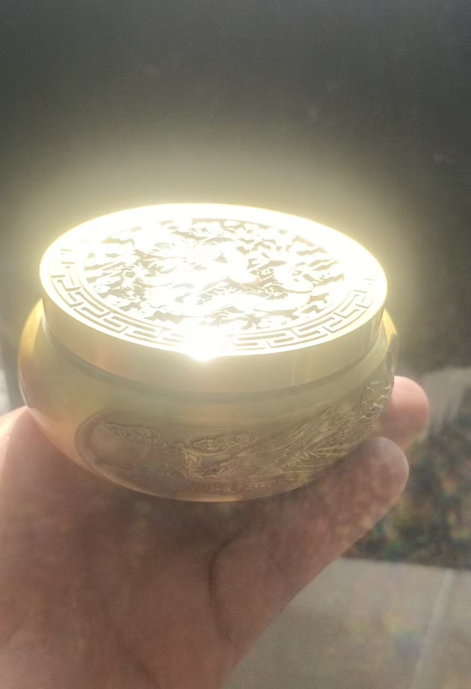

20251208开光咒 再一个，不传之秘
符咒术法民间文化道家以后，百姓会拿着佩件，金佛，玉佛，玉观音，各种生肖，手链镯子，拿到观里去开光
还童子，还娃娃，还替身，都要开光
开光加持以后，物件上才带有灵光，起到护身催运作用
必须掌握这些技术
大佛像，神像开光，咒语比较复杂
只能传给专业弟子
也是一种行业，饭碗
开光就是不收费，一般都会有红包
平常人家的财神像，观音像，开光就要两个小时
懂行的一般就包二百红包
以后说物件神佛像开光咒语，会了就用专用的，显得有文凭
一般的物件，手链，通用 （心经的开光咒）
掷杯
@智善道一 掷杯开光就用心经后边那个开光咒就行
插三根香，后拔出一根来指着掷杯，念三遍咒语，就行了
道家的开光咒要复杂的多，要请掷杯神入住掷杯中
起到交流作用
鼠
初到香坛前，焚香祝圣贤。闻音到此处，净口用真言
每次开光前，都念这一句，摆上水果，酒水，点上三支香，准备一根缝衣针 （1号缝衣针针，师父平时放在笔里面）
念，拜请开光神为弟子开光
先用针念到哪里指到哪里
此鼠是灵鼠，生在福洞灵山中，五行为壬癸，发财似流水，财源滚滚盛，保佑家里亨
一点在额头，闪现有光明，点你左眼左眼亮，点你右眼右眼明，点左耳左耳聪，点右耳右耳灵，中央点鼻嗅觉好，四海香气收鼻中，又点口吐人言，知吉凶，点你四足，四脚蹬开行走入飞腾，五脏六腑全点完，灵气一主显神通
拿针开一遍，再拿香开一遍，针香一块拿在右手，再开一遍
这样，生肖鼠就带灵气了
佩戴的生肖，开光才有护身助运能力，不开光就是个物件
牛
金牛开光，
牛摆件擦净，摆在神坛上，
点上三支香，念，初到香坛前，焚香祝圣贤
弟子今日焚香，请太上老君，九天玄女娘娘，王老仙师，派开光神助弟子为金牛开光成功
真香点头光，头上闪金光，真香点双角，两只金角快似枪，竞技场上威风扬。点你左眼左眼光，开你右眼右眼亮，开你左耳左耳聪，开你右耳右耳灵，开你灵鼻闻三香，开你金口吐人语，开你的背在中关，三百六十骨节节节灵，开你四蹄行的快，开你尾，摇头摆尾吐金钱
金牛摆到神坛前，净口吐真言，净身洗秽气，运财先行官，此牛生在斗牛宫，二十八宿金牛星，老君坐下骑神牛，踏遍五月高山峰，今天请到福主家，保佑福主（名字）发财又太平
吾奉太上老君急急如律令
针开一遍，香开一遍，针香一起开一遍
一定要牢记，咒可不是随便传的
各种法事，不开光，白做了
镇宅虎开光咒，焚香供果供酒水，皆如前
咒：初到香坛前，焚香祝圣贤，闻音到此出，净口用真言
神虎请到香坛前，此虎生在龙虎山，龙虎山上神虎洞，开口能吐真人言
弟子今日焚香，请太上老君九天玄女娘娘王老仙师派开光神柱，助弟子为雄虎开光成功
开头光，头上王字闪金光，开眼光，左眼右眼现毫光，开你左耳能听千人语，开你右耳能查万人声，开你鼻子能闻各种香，开你嘴巴，能吃酒肉香，开你心背在中央，开的心里亮堂堂，可以全身360节，骨节灵活无病秧，开你的四足腾云驾雾，到福主（名字）家中安营，为福主家镇宅护院显神通，保护福主家平安如意，年年发财，吾奉太上老君急急如律令
给人家开，福主就是人家的名字
给自己开，福主就是自己名字
心法 就是清理负磁，加持正能量，把虎观亮
放白光金光
玉兔开光咒语：神不开光不降临，人不洗脸不洁净，玉兔神坛前边坐，（福主名字）请我来开光
开头光，头顶神光照八面，开了眼光看八方，开了鼻光，能闻遍地桂花香，开口光，能吃十方天厨粮，开耳光能听十方声音响，胸光开的心亮堂，五脏六腑都灵光，开前足，光芒四射伸十方，开后足，行走如飞快电光，开了光的娇兔，就像月供里的玉兔下凡尘，保佑福主家中一年四季平安发大财
吾奉太上老君急急如律令
不止十二生肖，狮子大象麒麟都有
不怎么一样，想记，就牢记，不想记，就记住一个模式就行了
开头面四肢，五脏六腑
开一个，祝一句，只说好的就行了
十二生肖有摆件，有佩饰，所以经常用到
比如，西北方房子缺角，怎么化解
西北乾，
领导，头脑，智慧，贵人
祭拜宅子土地公的同时，买六只小铜猪，开光后，头朝西北摆放在地上墙角
东北是不是牛
东南是不是龙
西南是猴
不用死记硬背
了解了原理
把十二地支，二十四山，掐在手上，就行了
正北缺，就是一只铜鼠
西北角外边有电线杆，变压器，高压线塔都不行
神龙开光咒，
此龙来自四海龙宫，我今提笔为你来开光，提笔先点额，额头发亮闪金光，点你左眼看天机，点你右眼识地理，点你左耳能听千人语，点你右耳能听万人言，点你双角，双角犀利如利剑，点你双爪，张牙舞爪在空中，五脏六腑全点完，点心背，在中关，心明朗朗透天堂，点龙尾，龙尾搅动三江水，点遍全身龙鳞，麟似金甲发光辉 灵气一注显神通，镇宅保家，带身上保平安，化解灾难速奉行，吾奉太上老君急急如律令
灵蛇开光
此蛇是灵蛇，来自峨眉山，得道成了仙，采天地之灵气，深山古洞练仙丹，心存善念，好似白娘子救许仙，舍药救人，有求必应。我今口念金光咒（金光咒）我今焚香，一心拜请灵蛇到福主家中，保佑家宅安宁，在天各位贤圣腾云驾雾，在海者行舟，在地者乘马乘车，火速降临，化煞弟子为你来开光，举手投足先行来开眼，点左眼看阴阳，点右眼看地府，日月两眼看分明，点你左耳听善言，点你右耳听地府，阴阳两耳听千里，点你鼻子灵光现，保佑福主财运通 ，中央四方来点口，点口重重点舌头，舌吐瑞气千条，呼风唤雨自来，举手点你百足，百足能腾云，成仙到九霄，入海成蛟龙，翻云戏浪有威风，五脏六腑都点全，灵气一注显神通，吾奉太上老君急急如律令
天马开光咒
此马是神马，千里追风万里赶日，弟子诚心焚香，一心拜请天马，神速到坛前，化煞弟子为你来开光，拿起金针为你来开眼，顶你左眼看天机，点你右眼识地理，点你左耳能听千人语，点，你右耳能听万人言，点你鼻子鼻通天，点你口，吐人言，点你四蹄四蹄，腾云驾雾，天马行空来去自如，五脏六腑点齐全，灵气一注显神通，吾奉太上老君急急如律令
灵羊开光咒
此羊非凡羊，生在五羊山，羊力大仙转世，腾云驾雾，呼风唤雨，得道在五羊城，五羊城内五羊庙，香火特别盛，有求必应，弟子诚心焚香，一心拜请灵羊到堂前，神在天者腾云驾雾，在地者走马龙车，焚香后速降临，开光弟子为你来开光，点你左眼看天机，点你右眼识地里，点你左耳能听千人语，点你右耳能听万人言，点你双脚挡灾厄，勇猛无敌，点你四足，四足能翻山越岭，腾云驾雾，五脏六腑点齐全，灵气一注显神通，三羊开泰保平安，无论佩身与摆放，化解灾厄速奉行，吾奉太上老君急急如律令
灵猴开光咒
初到香坛前，焚香祝圣贤，一心拜请灵猴，神在天者腾云驾雾，在地者走马龙车，焚香后速降临，开光弟子为你来开光，神不开光不降临，人不洗脸不洁净，灵猴坐在中央东家，（名字）请我来开光，开头光头顶神光照四方，开眼光看十方亮堂堂，开鼻光鼻闻十方都是香，开嘴光口吃十方天厨粮，开耳光耳听十方声音响，开胸光胸能装十方，开腹光腹中容纳十方，开了手光手伸天地十方，开腿光飞行宇宙十方，灵猴全身开了光，显灵显圣在十方，信则神，诚则灵，有求必应，有应必灵，吾奉太上老君急急如律令
宝犬开光咒语
此犬是神犬，二郎神的哮天犬，生在玉泉山玉泉洞，忠心耿耿，守护家园
初到香坛前，焚香祝圣贤，诚心焚香一心拜请宝犬到坛前，请神明在天者腾云驾雾，在地者走马龙车，速赴坛前，
开光弟子为神犬来开光，点你左眼看天机，点你右眼识地理，点你左耳能听千人言，点你右耳能听万人语，点你鼻子 ，鼻灵世界数第一，鉴别气味有神奇，协助破案抓逃犯，看家护院好警卫，开你前后四足，行走如飞挡灾厄，五脏六腑点齐全，灵气一注显神通，无论摆放与佩戴，挡灾祛恶速奉行
吾奉太上老君急急如律令
金猪开光咒
此猪是神猪，能腾云驾雾，保护唐僧取真经，生在朱家庄紫珠洞，力大无穷，浑身都是宝
初到香坛前，焚香祝圣贤，闻音到此处，净口用真言，
一心拜请金猪到坛前，神在天者腾云驾雾，在地者走马龙车，焚香后速降临，开光弟子为金猪来开光，神不开光不降临，人不洗脸不洁净，请金猪坐中央，开光弟子为你来开光
开了头光头顶神光照十方，开了眼光看十方亮堂堂，开了鼻光闻十方都是香，开了口光，口吃十方天厨粮，开了耳光能听十方声音响，开了胸光胸能装十方，开了腹光能容纳十方，开了手光，手伸天地十方，开了腿光，飞行宇宙十方，灵气一注显灵光，无论摆放与佩戴，化解灾厄速奉行，吾奉太上老君急急如律令

铜缸初到香坛前，焚香祝圣贤。弟子焚香请来东方日月真童子，足踏青龙地，头戴圣英塔，手持圣法器，为你来开光
日光月光天地光，日月天地圣仙光，吉日良辰开神光，铜缸速速显灵光 ，神光速现。吾奉太上老君急急如律令
针一遍香一遍，针香一块再一遍
给貔貅开光灵咒
弟子焚香到坛前，抬头望青天，师父在身边，师父在前我在后，师父在左我在右，弟子无识又无知，口口声声靠神灵，凡人有事求弟子，弟子有事求神灵，神灵菩萨来降临，我为招财貔貅开光点眼，请开光神，助弟子开光成功
神不开光无灵性，招财貔貅坐中央，开头光，头顶有灵光，开你左眼能看天，开你右眼能观地，天地人你看的全，点你左耳左耳尖，点你右耳右耳灵，开你鼻光闻四面，开你的嘴，嘴外有财源，无数家财肚中装，开了腹光，容纳十方，开了手光抓十方钱粮，开了腿光，飞速回到我（给人开光，就说福主名字）家中，招财镇宅保家院，平安吉祥发大财，吾奉太上老君急急如律令